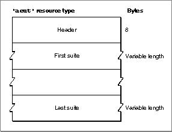

Legacy Document
Important: The information in this document is obsolete and should not be used for new development.
Important: The information in this document is obsolete and should not be used for new development.


Reference to Apple Event Terminology Resources
Listing 8-1 on page 8-14 shows the complete resource type declaration in Rez format for the'aeut'resource. The same resource structure is used by both the'aeut'and'aete'resources. Figure 8-1 shows the format of a compiled'aeut'or'aete'resource.Figure 8-1 Structure of an
'aeut'or'aete'resource
An
'aeut'or'aete'resource contains the following:
The sections that follow describe the content of the header and each suite description in detail.
- a header containing the version and language code of the template and a count of the number of suites the resource describes
- a variable number of suite descriptions
Subtopics
- Header Data for an Apple Event Terminology Resource
- Suite Data for an Apple Event Terminology Resource
- The Scripting Size Resource